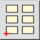

- Aktivieren Sie den Block den Sie einfügen wollen in der Blockliste.
- Klicken Sie die Einfügen Schaltfläche oder wählen Sie 'Block einfügen'
vom Blockmenü.
- Geben Sie den Rotationswinkel und den Skalierungsfaktor für die
Blockreferenz in der Optionenwerkzeugleiste ein.
- Geben Sie die Position des eingefügten Blocks an, indem Sie auf eine
Koordinate klicken oder eine Koordinate in der Konsole eingeben.
- Um ein ganzes Array von Blöcken zu erstellen, klicken Sie auf die Array-Schaltfläche in der Optionenwerkzeugleiste:

Geben Sie die Spalten, Zeilen, den Spaltenabstand und den Zeilenabstand im angezeigten Dialog ein.
Diese Eigenschaften können auch später mit dem Eigenschafteneditor bearbeitet werden.